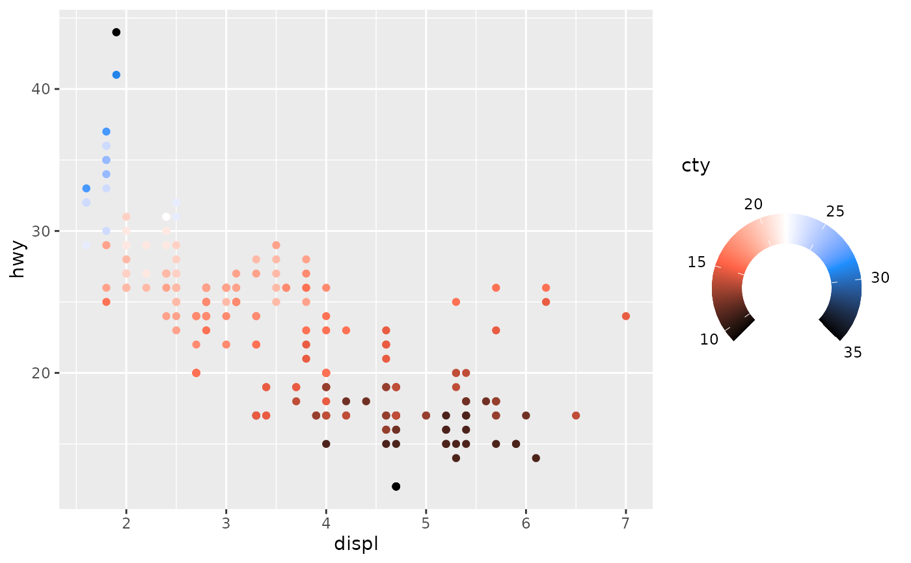
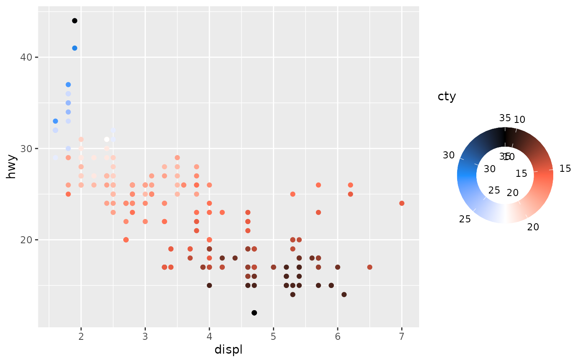

Similar to guide_colourbar(), this guide
displays continuous colour or fill aesthetics. Instead of a bar, the
gradient in shown in a ring or arc, which can be convenient for cyclical
palettes such as some provided in the scico package.
Arguments
- title
A
<character[1]>or<expression[1]>indicating the title of the guide. IfNULL, the title is not shown. The default,waiver(), takes the name of the scale object or the name specified inlabs()as the title.- key
A standard key specification. Defaults to
key_auto().- start, end
A
<numeric[1]>in radians specifying the offset of the starting and end points from 12 o'clock. TheNULLdefault forend, internally defaults tostart + 2 * pi.- outer_guide, inner_guide
Guides to display on the outside and inside of the colour ring. Each guide can be specified using one of the following:
A
<Guide>class object.A
<function>that returns a<Guide>class object.A
<character>naming such function, without theguide_orprimitive_prefix.
- nbin
A positive
<integer[1]>determining how many colours to display.- reverse
A
<logical[1]>whether to reverse continuous guides. IfTRUE, guides like colour bars are flipped. IfFALSE(default), the original order is maintained.- show_labels
A
<character[1]>indicating for which guide labels should be shown. Can be one of"outer"(default),"inner","both"or"none". Note that labels can only be omitted if the related guide has a label suppression mechanism.- theme
A
<theme>object to style the guide individually or differently from the plot's theme settings. Thethemeargument in the guide overrides and is combined with the plot's theme.- vanilla
A
<logical[1]>whether to have the default style match the vanillaguide_colourbar()(TRUE) or take the theme verbatim (FALSE).- position
A
<character[1]>giving the location of the guide. Can be one of"top","bottom","left"or"right".- available_aes
A
<character>vector listing the aesthetics for which this guide can be build.- ...
Arguments forwarded to the
outer_guideandinner_guideif provided as functions or strings.
See also
Other standalone guides:
guide_axis_base(),
guide_axis_nested(),
guide_colbar(),
guide_colsteps(),
guide_legend_base(),
guide_legend_cross(),
guide_legend_group()
Examples
# Rings works best with a cyclical palette
my_pal <- c("black", "tomato", "white", "dodgerblue", "black")
p <- ggplot(mpg, aes(displ, hwy, colour = cty)) +
geom_point() +
scale_colour_gradientn(colours = my_pal)
# Standard colour ring
p + guides(colour = "colring")
# As an arc
p + guides(colour = guide_colring(
start = 1.25 * pi, end = 2.75 * pi
))

# Removing the inner tick marks
p + guides(colour = guide_colring(inner_guide = "none"))
# Include labels on the inner axis
p + guides(colour = guide_colring(show_labels = "both"))

# Passing an argument to inner/outer guides
p + guides(colour = guide_colring(angle = 0))